Read the work
IEEE-style manuscript: PDF · Editable Word
Supplement S1: detailed derivations: PDF · Editable Word
Response to methodological review: PDF · Editable Word
RAAGHAVAN MOOKIAH BARATHKUMAR · Version 1.0.0 · All rights reserved
IEEE-style manuscript: PDF · Editable Word
Supplement S1: detailed derivations: PDF · Editable Word
Response to methodological review: PDF · Editable Word
Each movie is one illustrative paired trial across fourteen configurations, not an ensemble success estimate. Movies use the fixed 2 s push onset.
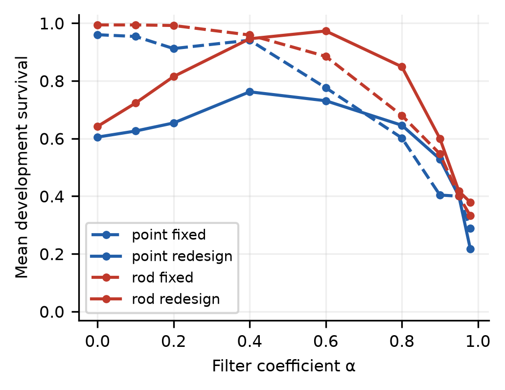
Development sweep over nine finite-difference filter coefficients, with fixed continuous LQR gains and a local filter-aware gain redesign. Each point averages five declared tasks and 200 paired trials per task. Tuning uses development data only; no global optimality is asserted.
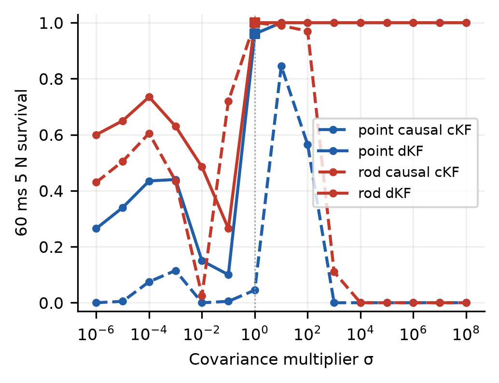
Development survival at 60 ms/5 N over σ = 10⁻⁶ through 10⁸. Squares mark dKF at σ = 1: point dKF 192/200 (96.0%) versus held-out 485/500 (97.0%); rod dKF 200/200 (100.0%) versus held-out 499/500 (99.8%). Fig. 2 uses seed 20261121 and 200 trials per point; Table II/Fig. 6 use seed 20261122 and 500. Solid curves are dKF; dashed curves are causal cKF. The selection objective averages all five declared tasks.
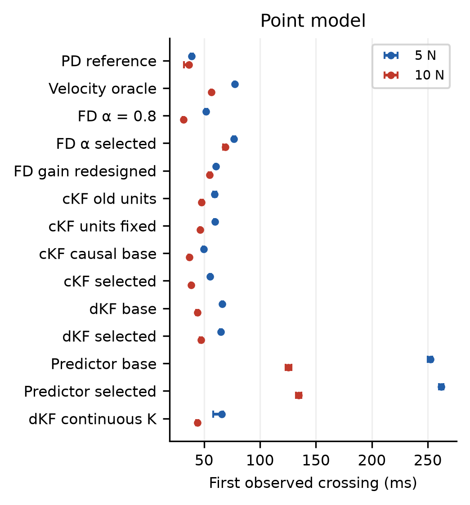
Held-out point model first observed downward crossings of 50% ten-second survival for 5 N and 10 N pushes. Bars are 95% trial-paired bootstrap intervals conditional on evaluated delays; local numerical crossing brackets are 1 ms. A cross at zero denotes survival below 50% without added delay. These are not monotone delay limits or stability certificates.
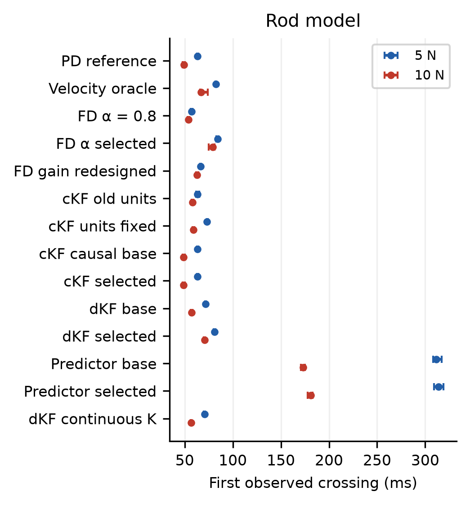
Held-out rod model first observed downward crossings of 50% ten-second survival for 5 N and 10 N pushes. Bars are 95% trial-paired bootstrap intervals conditional on evaluated delays; local numerical crossing brackets are 1 ms. A cross at zero denotes survival below 50% without added delay. These are not monotone delay limits or stability certificates.
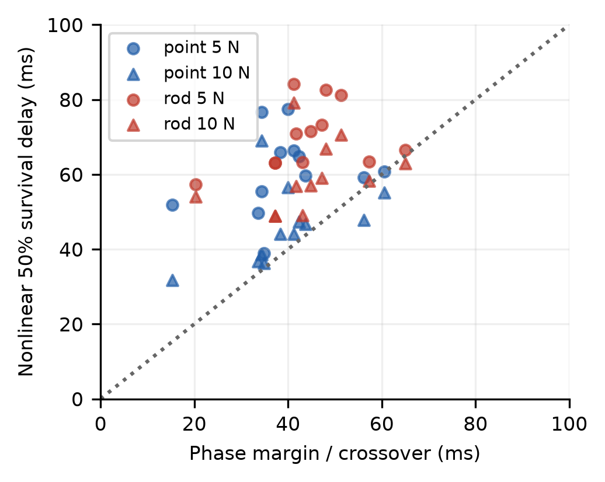
Phase-based nominal delay estimates versus nonlinear ten-second survival boundaries. The diagonal is equality. Exact lifted linear predictions, tabulated in the supplement, closely match the phase-based values. Predictors are omitted because their compensators depend on delay.
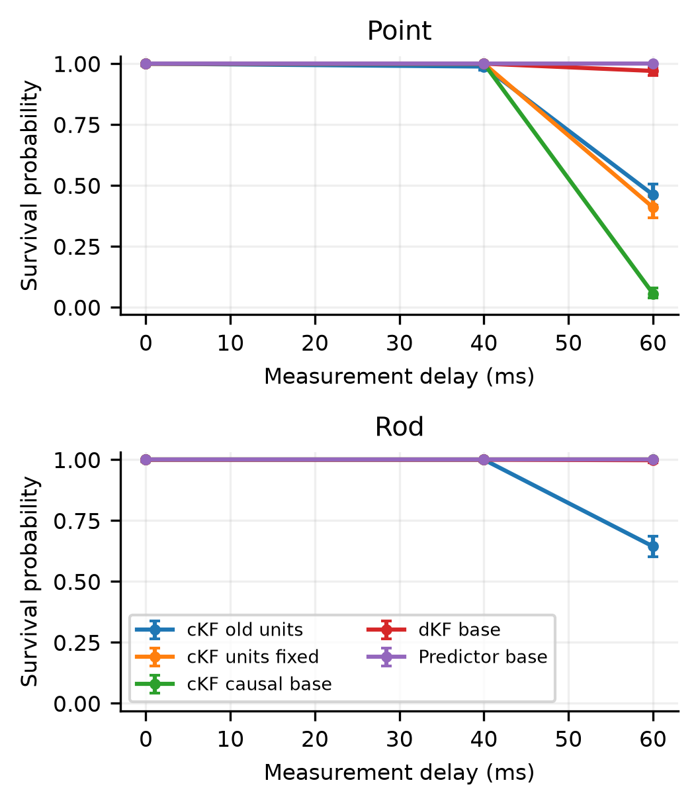
Paired held-out checks isolate the covariance-unit correction within the legacy update, then enforce causal observer timing and compare delay-unaware and timestamp-aware discrete estimators. Each cell has 500 trials and pointwise Wilson intervals.
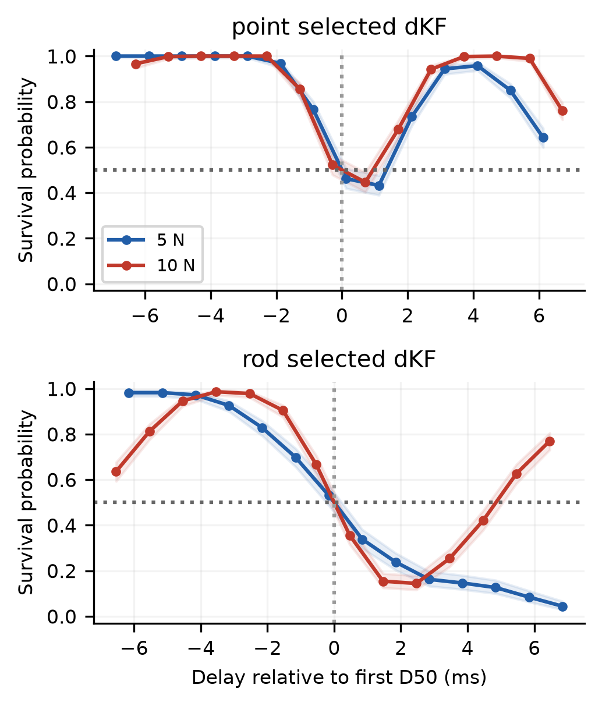
Local one-millisecond held-out survival curves around each first observed half-survival crossing. Bands are pointwise Wilson intervals. Recrossings are retained: a single monotone collapse is not assumed, and reported boundary intervals condition on the evaluated delay grid.
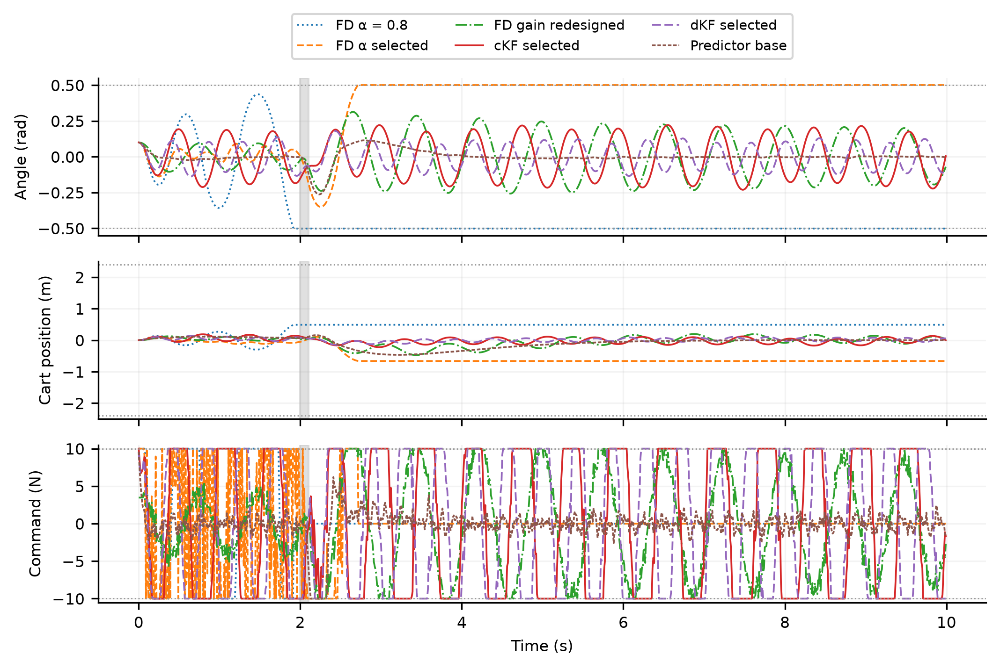
One paired illustrative point realization at 60 ms/10 N, seed 20261125. Gray shading marks the unknown push and dotted horizontal lines mark failure or actuator limits. Failed states are frozen and commands are zeroed at the next control update. These trajectories illustrate behavior and do not estimate ensemble survival.
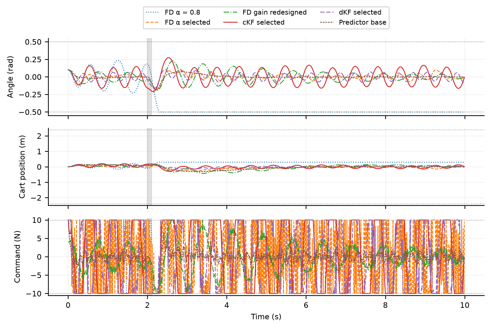
One paired illustrative rod realization at 60 ms/10 N, seed 20261125. Gray shading marks the unknown push and dotted horizontal lines mark failure or actuator limits. Failed states are frozen and commands are zeroed at the next control update. These trajectories illustrate behavior and do not estimate ensemble survival.
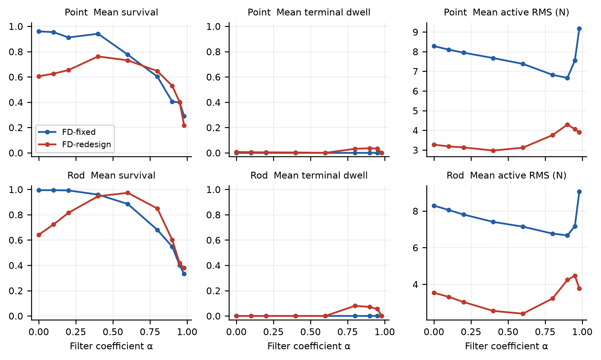
Full development α sweep: mean survival, terminal dwell and active-time RMS across the five declared tasks, for fixed and filter-aware redesigned gains. Each setting uses 200 paired trials per task.
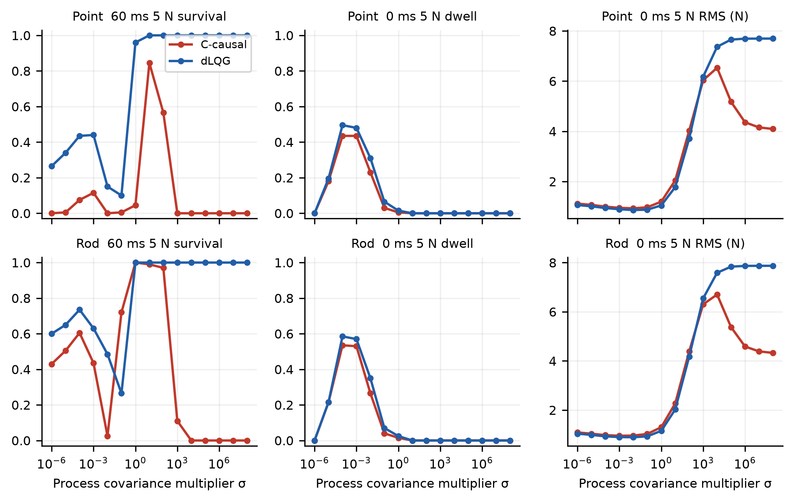
Full covariance-ratio trade-off: 60 ms/5 N survival and zero-delay/5 N terminal dwell and active RMS, across both models and both corrected observer families. The full tested multiplier range extends fourteen orders of magnitude.
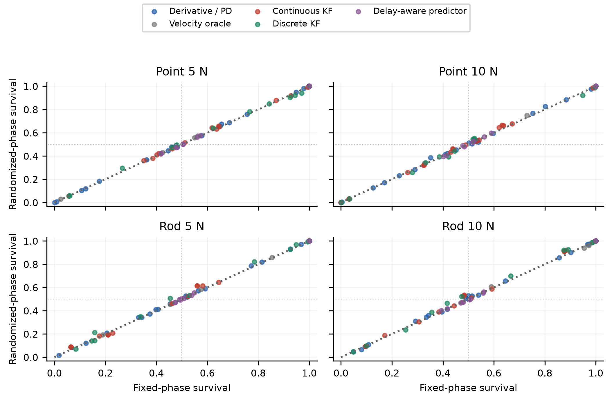
Randomized-minus-fixed push-phase sensitivity across all fourteen configurations, both push magnitudes and the queried local-crossing/60 ms cells. Each point compares 500 trial-paired realizations per regime; the diagonal is equality. The push starts at 2 s plus an independent uniform integer 0,…,9 ms and lasts 100 ms. This local sensitivity check does not re-estimate a full phase-averaged D50 curve.
Simulation study; no hardware validation or journal acceptance. Earlier interpretations are superseded by the current manuscript. Historical drafts, when included, are in history/.